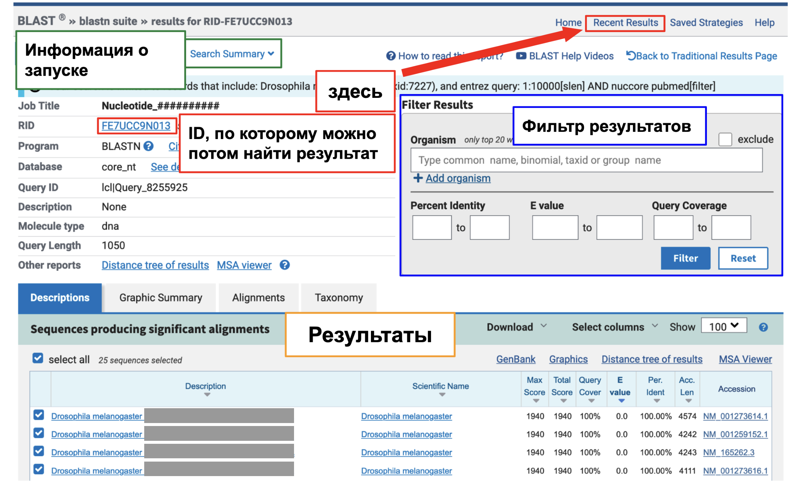

BLAST
Введение
BLAST (Basic Local Alignment Search Tool) — это разработанный Национальным центром биотехнологической информации (NCBI) мощный набор алгоритмов, используемых для сравнения биологических последовательностей. Сравнение может производиться как между двумя и более вашими последовательностями, так и между вашей последовательностью и выбранной базой данных ДНК, РНК или пептидов. Второй вариант исследователями используется чаще.
BLAST широко применяется в молекулярной биологии, генетике и эволюционных исследованиях для:
Идентификации неизвестных последовательностей, например, при попадании в образец чужеродной ДНК;
Поиска гомологичных генов или белков, что позволяет ученым, например, предсказывать функцию генов или белков;
Изучения эволюционных взаимосвязей между организмами, анализируя различия между гомологичными последовательностями различных организмов.
Зоопарк алгоритмов
Воспользоваться BLAST можно как на вебсайте NCBI, так и локально у себя на компьютере (об этом чуть позже). На главной странице сайта можно увидеть основной набор инструментов BLAST, в который входят различные алгоритмы:
blastn (nucleotide blast) - сравнивает нуклеотидные последовательности. Нужен для поиска схожих последовательностей ДНК или РНК в базе данных, поиск генови изучение геномных вариантов .
blastp (protein blast) - сравнивает белковые последовательности. Исползуется для поиска схожих белков, изучения функциональных доменов, выявление эволюционных связей и поиска белковых семейств
blastx - переводит нуклеотидные последовательности в пептидную последовательность и сравнивает их с базами данных белков (nucl->protein vs. protein db). Помогает выявить белки, которые могли бы кодироваться данным фрагментом.
tblastn - с использованием белкового запроса ищет в транслированных нуклеотидных базах данных (protein vs. protein<-nucl db). Помогает найти гены, которые могут кодировать подобные белки в нуклеотидных базах данных, включая некодирующие последовательности или неаннотированные участки
tblastx - транслирует одновременно и нуклеотидный запрос и базу данных, по которой ведётся поиск. Таким образом поиск происходит (nucl->protein vs. protein<-nucl db). Выявление схожих белков, кодируемых на уровне ДНК, когда рамка считывания неизвестна.

Существуют и другие варианты, которые предлагает BLAST на главной странице:

WEB-BLAST
Будем разбираться сразу на примере. Наш коллега-лаборант дал нам для поиска такую последовательность в формате .fasta:
>some_sequence
GCGATGATCGCAGCGATCGTGATAATGGTTCTCTGTACAGTGGTGACGAATTCTCCAAAGATAAGAAAAA
CTCCTCGTTAATCAGAGAGGGCGACATCGATTTCACAGACGACGAAAACGGTTTCGATATACGCTGTGAG
GTCTGTGATAAAGTCTATCCGGATTTAGATCTCTTGGACGATCATCTGATAGGCGCTCACCATTTCAAGC
AGGACGAATTTCCGTGCAAGCAATGCGCTCTGCGATTTTGCCATCGTCCTTTGCTAATTAAACACGAAGC
TATCTCCCACAATAACATACGCAAATATTCCTGCGAAAATTGCAGCAAGGTATTTTGTGACCCCTCGAAT
CTACAGCGGCATATTCGCGCCTACCACGTCGGAGCTCGCTGTCATCCGTGTCCGGAGTGCGGGAAAACGT
TCGGAACCTCGTCGGGCCTGAAGCAGCACCAGCACATCCACAGCTCCGTGAAGCCCTTCGCCTGCGAGGT
GTGCTCCAAGGCGTATACGCAATTCTCGAATCTGTGCCGTCACAAGCGGATGCACGCCACCTGTCGGATG
CAGATCAAGTGCGACAAGTGCAACCAGAGCTTCAGCACGTTGACCTCCCTGACCAAGCACAAAAAGTTCT
GTGATTCAACGGGTCCGGGTCCGTATCGAAACCAGCACGTGAATCGCCACCATCAGCATCCGCACCAGCA
CCCACTTCCGCATCAGCCCCACCTGGCCGCCACTGCCACATCCACCTGTCCAGCGCCACCAAGAGAATCT
TCGGAGTCCTCGTCCTCAGCAGCAGCTGCCGCCGTTGCCGCCATGTCGACGCCACCGAATCCTTTCCTAA
TGTTCCGCACTGCGCCGTCTTTCTTTCCCGGATTTCCGCCTTACGGATTTCCCCCCTTTCTACCACAAAA
TCCGCTGCATCCTACGAACATTCCGATGTTTTTCTCGAAAAATCCCATGGATTTGGGTTGCGGTGGTCCG
GAGATCACTTCTCCCGTTTCCGCCTTTGATCAGAAACTACCATTTGGCTTTCTAAAGGGTGAGAACAGTGНам дано, что это часть какого-то гена. Неизвестно его имя, функция и даже организм. Но так как мы биоинформатики, то нам это - раз плюнуть!
Settings
Enter Query Sequence
Сначала выберем алгоритм из всего зоопарка. Так как наша последовательность состоит из нуклеотидов, то нам нужен, алгоритм, который сравнивает нуклеотидные последовательности - blastn. Затем вставляем в окошко последовательность или, если у вас есть .fasta-файл, то загружаем файл:

Справа от окошка с последовательностью можно настроить Query subrange - диапазон последовательности, который будет использоваться для поиска, а также снизу Job title - имя запуска, чтобы не запутаться в нескольких запусках и найти потом результат на странице Recent Results (сверху справа под синим баннером и кнопкой Log In).
Choose Search Set
Интерфейс WEB-BLAST позволяет сузить поиск, тем самым ускоряя поиск и заранее отфильтровывая ненужные результаты.

Database
Во-первых нужно обязательно выбрать базу данных, по которой будет вестись поиск. В зависимости от цели и природы вашей последовательности, выбор базы данных будет отличаться
Вам может быть нужна:
Геномная ДНК
Митохондриальная ДНК
Вирусная или бактериальная ДНК
Рибосомальная РНК (16S, 18S, 28S)
Сырые данные из секвенатора и др.
По умолчанию это Core nucleotide database (core_nt) - это курируемая NCBI база данных, которая содержит огромное количество нуклеотидных последовательностей. Она включает в себя базы данных: GenBank, EMBL, DDBJ, PDB, RefSeq и является к тому же Non-redundant, то есть хранит уникальные последовательности, а не нескольких копий одного и того же (по крайней мере очень сильно старается).
Около выбранной базы данных есть значок вопросительного знака - нажав на него, вы увидете сводную информацию о базе данных. Вообще этот значок есть много где на сайте - смело нажимайте, если что-то не понятно
Organism
Опциональным параметром является спецификация taxid: класса, названия семейства, рода, вида или даже организма и прочее. Спецификация таксона значительно сузит и ускорит поиск. По умолчанию поиск будет производиться по всей базе. Если искомый ген есть у многих организмов, то в результате вы их все и получите, но с разной степенью схожести. Иногда исследователю это и нужно - чтобы исследовать различия между организмами.
Позже на странице полученных результатов их так же можно будет отфильтровать по организму.
Enterez Query
Это способ применения дополнительных более тонких фильтров поиска в базах данных NCBI (можно использовать при поиске чего угодно в NCBI), таких как BLAST, для уточнения результатов с помощью определенных ключевых слов, полей и логических операторов. Он позволяет сузить поиск до конкретных организмов, диапазонов дат или других аннотаций с помощью специального синтаксиса запроса. Запросы Entrez особенно полезны при поиске в больших базах данных, таких как nr/nt или RefSeq. Но синтаксис там правда иногда жуткий.
Homo sapiens[organism] AND BRCA1[gene] AND 2020:2024[pdat] - Организм - человек, Ген BRCA1, Информация с 2020 по 2024 год
Program Selection
Здесь можно выбрать программу оптимизированную под специализированную задачу. В blastn выбор стоит между чувстительностью алгоритмов. В blastp стоит выделить PSI-BLAST (Position-Specific Iterated BLAST), позволяющий более точно обнаруживать гомологи с меньшей степенью сходства, используя итеративный поиск с построением матриц сходства. PHI-BLAST использует для поиска дополнительно данный на вход паттерн поиска, а DELTA-BLAST дополнительно использует в поиске базу данных консервативных последовательностей.
P.S.
В алгоритмах blastx и tblastx есть дополнительный параметр Genetic code. Это важный параметр, если у вас необычный организм или не геномная ДНК (митохондриальная или пластидная). Вы помните про вырожденность генетического кода и перевод триплетов (кодонов) в определенную аминокислоту при трансляции в белок из мРНК. Зачем тут что-то выбирать…?
Но всё не так просто. Даже внутри нас с вами в ядре и митохондрии генетический код различается! Например, в ядерном геноме кодон UGA является стоп-кодоном, а в митохондриальном он кодирует триптофан. Есть и другие различия! Различные огранизмы с разной частотой используют разные сочетания трёх нуклеотидов для одной и той же аминокислоты. Известны и случаи, когда один и тот же кодон играет роль стоп-кодона и кодона, кодирующего аминокислоту. Чтобы учесть подобные нюансы и сделать поиск более точным, важно учесть Genetic code.
Под кнопкой BLAST есть вкладка Algorithm parameters. Если чувствуете себя чересчур крутым, то можете понастраивать алгоритм поиска и выравнивания. Но пока давайте не будем ломать то, что хорошо работает.
Теперь мы готовы к запуску! нажимаем заветную кнопку BLAST!
Results

На странице результатов можно напомнить себе сводную информацию о запуске поиска. Есть возможность отфильтровать результаты по показателям (о них ниже) и организму. Здесь можно увидеть ID задачи, с помощью которой можно будет найти свои результаты в Recent Results.
Советую сохранить этот ID и учесть, что реузльтаты хранятся на сайте всего 24 часа! Поэтому настоятельно советую их сохранить, если они вам будут нужны позже
Ну и, конечно, сами результаты. Рассмотрим каждую вкладку результатов.
Descriptions
Самая главная вкладка результатов, где есть названия последовательностей и значения, по которым можно определить насколько эта последовательность похожа на искомую.
Max score - означает наилучшее локальное выравнивание между нашей последовательностью и найденной
Total score - сумма scores всех вариантов глобального выравнивания.
Если Max score = Total score, значит есть лишь один вариант выравнивания и он лучший.Query cover - насколько найденная последовательность совпадает с нашей (покрывает её).
Bit score - нормализованный показатель, позволяющий сравнивать различные поисковые запросы, независимо от размера базы данных или длины запроса.
Равен \(\frac{(λ * Raw Score - \ln K)}{\ln 2}\) , где λ и K - константы, определяемые областью поиска…E-value - количество выравниваний с данным или большим score, которые, могут “случайно” совпасть в базе данных.
- E-value = длина нашей посл-ти * кол-во нуклеотидов в базе данных * 2 ^ (Bit score)
Чаще всего смотрят именно на этот показатель.
Per Ident. - Процент совпадений между выравненными последовательностями.
Accession - уникальный идентификатор, присваиваемый конкретной последовательности в одной из баз данных. Для отслеживания отдельных записей используются регистрационные номера, что облегчает поиск, цитирование и ссылки на конкретные последовательности.
Graphic summary
Здесь визуально представлено то, как выравниваются найденные последовательности на нашу.
Alignments
Более подробная информация о том, как каждый результат выравнивается на наш запрос - масштаб до нуклеотида. Каждое такое выравнивание можно скачать, визуализировать в геномном браузере. Также здесь есть информация из других баз данных о найденных последовательностях (она не написана тут, но можно перейти по ссылкам).
Taxonomy
Здесь можно узнать общую информацию о таксономичческой принадлежности найденных последовательностей.
Маленькая шпаргалка на будущее
Не знаете, какие параметры выбрать? -> Оставляйте по умолчанию
Результаты разнородные и их слишком много? -> Отфильтруйте их или в результатах, или установите фильтры при поиске. Подумайте над использованием и другой более узкой базы данных (например, RefSeq).
Результатов мало или результат - это название организма и номер хромосомы -> Убедитесь, что с вашей последовательностью всё нормально. Попробуйте использовать более обширную базу данных (например nr/nt). Использовать модифицированный алгоритм: для нуклеотидов - Discontiguous MegaBLAST, для пептидов - PSI-BLAST. Или даже совем другие - tblastx или tblastn - основанные на трансляции в пептиды могут показать более “удаленные” последовательности
- Bозможно, ваш запрос является некодирующей последовательностью (интрон, межгенная область).
Результат сомнительный? -> Бывает и так, что вы отправляете на поиск что-то неизведанное! Однако вероятность такого мала, если вы не секвенировали обитателей какой-нибудь Амазонки или Мариансокй впадины. Возможно, ваша последовательность содержит повторы, ошибки. Убедитесь, что вы установили правильные фильтры (особенно на организм).
Итак, что мы нашли?
В результате мы нашли, что наша последовательность из гена hamlet мушки Drosophila melanogaster.
Назван он так в честь фразы Гамлета “to be or not to be”, так как дефект в этом гене влияет на развитие клеток, произошедших от клеток-предшественников “IIB” (созвучно “to be”)
Норма - IIB, Мутант - not IIB
Генетики - креативные ребята…
BLAST+
BLAST+ - это улучшенная версия оригинального BLAST, разработанная для повышения производительности, гибкости и масштабируемости задач выравнивания последовательностей (по крайней мере они так пишут о себе). BLAST+ реализован на языке C++ и является утилитой для запуска через терминал UNIX-систем.
Пакет BLAST+ включает в себя несколько уже описанных выше инструментов: blastn, blastp, blastx, tblastn и tblastx. Они позволяют использовать биологические попследовательности, хранящихся прямо у вас на компьютере, для поиска по базам данных, скачанными локально или даже созданных самостоятельно.
Зачем запускать BLAST локально и создавать свою базу данных последовательностей?
Оптимизация производительности
Локальный запуск и база данных позволит избежать ограничений, связанных с серверной версией, таких как лимиты на размер последовательности для поиска (100 тыс п.н.) или число запросов. Также, если есть возможность запустить алгоритм на высокопроизводительном сервере, то поиск будет в разы быстрее.
NoteПри создании базы данных создаются файлы-индексы, благодаря которым дальнейший поиск по ней происходит намного быстрее (подробнее будет далее).
Интеграция в пайплайн
Иногда запуск BLAST - это лишь один из шагов в большом последовательном автоматизированном анализе. При этом отправка промежуточного результата на веб-версию BLAST неудобна и излишна. К этому еще добавлются и ограниичения из первого пункта.
Поиск по последовательностям и данным, которых нет в общедоступных базах данных
Например, вы изучаете неизвестных человечеству бактерий, геномы которых вы только что расшифровали. Вам очень хочется узнать есть ли в их геномах какая-то последовательность (например, гена, кодирующего токсин). Для этого можно сделать локальную базу данных, содержащую геномы ваших бактерий, а затем произвести по ней поиск уже известной всему миру последовательности гена токсина.
Как создать локальную базу данных и запустить поиск по ней
Пусть у нас есть .fasta
#seqs.fasta
>seq1
GTACGAGATTACGGCGCATCGATCGATTGCGGATTGCGCGATATATCT
TAGGCGCTAGCTATATTTTTCGGGAAAAAAGCGCTAGATTCAGCGCGC
GATCTACATTATATCGACTATTACTAGCGCTATATATATTTATGCGCG
ATTCGCGCTATATCCGAGTATAGAATGCTTAGTCTAGTTCTATCTATT
>seq2
ACCGGCGATTATATCGGCATGCGACGACATATTATTACGGGCGCCCAT
ATATTCTGCATATATCGCGAAAAATTTTTTGGCCCCGAGGATATATTC
TCGAGTCTACGATTATATCGGATCGATCAGCAGCTATGCTATCGATCA
CGAGCACTAGCACAGCTATATATCGCGCATCATAAGATAGCGAAGAGC
>seq3
AAAAGGCCCTAGATAGATATATTGCGCATAAAATCGCGGCGCGATCGA
TCTATATCGATGCGGGAAATTCTCGAGCATCTACGATCATTCATCTAT
TAAGACGACTAGCATCGAGCACATCACTACTACATAAATTATTCTTTA
TTCAAATATTTTCTTCAGGGCGATCGATTATCGACGATTATTCTATTTи мы хотим найти среди этого всего разнообразия подпоследовательность CTGCATATATTTCGAAAA
Попробуем обычный поиск в файле:
grep --colour=auto "CTGCATATATTTCGAAAA" db.fasta #no outputК сожалению, мы ничего найдем… Вероятно, дело в мутациях. И здесь вступает BLAST:
Создание локальной базы данных
Сначла нужно создать базу данных, по кторой будем производить поиск:
makeblastdb -in seqs.fasta -dbtype nucl -out databases/db_3_seqs -parse_seqids-in- наша база данных;-dbtype- тип базы данных (nucl- ДНК/РНК,prot- пептиды, белки);-out- Это название базы данных. То есть ваша база данных будет храниться в папкеdatabases, а файлы в ней будут с именемdb_3_seqs.n**, гдеn**- это какое-то расширение файла. Далее при использовании BLAST+, если понадобится ИМЯ базы данных, то надо указывать подобное имя (databases/db_3_seqs);-parse_seqids- распознать ID последовательностей. Нужно, если-inпринимает .fasta и вы хотите сохранить названия записей в файле (>seq1).Прочие параметры, которые можно увидеть, если набрать команду
makeblastdb -help
При запуске этой команды сгенерируется около 10 файлов, поэтому чтобы не захламлять текущую директорию, лучше создать новую.
Поиск!
Так как поиск будет производиться по нуклеотидным последовательностям, то воспользуемся blastn.
blastn принимает на вход только файлы, поэтому создадим fasta-файл c искомой последовательностью:
printf ">unknown_seq\nCTGCATATATTTCGAAAA" > query.fastaА теперь побежали!
Сделаем сразу в двух форматах, чтобы понять разницу
blastn -query query.fasta -db databases/db_3_seqs -outfmt 7 -word_size=9 > blast_results_fmt6.txt
blastn -query query.fasta -db databases/db_3_seqs -outfmt 0 -word_size=9 > blast_results_fmt0.txt-query- файл искомой последовательности;-db- созданная нами база данных, по которой ищем;-outfmt- формат вывода результата (их всего 18 видов, о которых можно узнать черезblastn -help)-word_size- алгоритм BLAST устроен так, что сначала он ищет лучшее совпадение “слова” длиной, соответствующейword_size. Если искомая последовательность меньше параметраword_size, то ничего не найдется. У нас достаточно маленькая последовательность, поэтому мы используем своё число.
Если наша последовательность содержит замены, то word_size, который меньше нашей последовательности не гарантирует, что что-то найдется. Всё дело в заменах, делециях, инсерциях и прочее…
Допустим у нас последовательтность AGTCGTAA, а ищем мы внутри нее TGGTA. Если выберем word_size=4, то можем ничего не найти! Сначала BLAST пытается выравнить четырёхбуквенные “слова” (TGGT и GGTA) идеально и если не находит ни одного “идеального” совпадения, то результат будет пустым. Теперь установим word_size=3 (TGG, GGT, GTA). И тут мы найдем “идеальное” совпадение:
AGTCGTAA
NNNNGTAN
Отсюда начнется “расширение” поиска алгоритма далее
- О остальных параметрах можно узнать в
blastn -helpили<another algorithm> -help
P.S.
Существует также параметр
-task, и он принимает значения, о которых можно узнать подробнее отдельно (<algorithm> -help).- В нашей задаче мог пригодиться “
blastn-short"("blastp-short"- для белков), который сделан специально для поиска коротких последоваталеьностей.
- В нашей задаче мог пригодиться “
Параметр
-remoteпозволяет использовать сервера и мощности NCBI. Но учтите все ограничения, которые есть у веб-версии!
Есть вариант не создавать базу данных, но рекомендую так делать только если ваша база данных маленькая и/или состоит из коротких последовательностей (например, поиск подпоследовательности в не очень большой последовательности).
Для этого в алгоритме поиска используйте парамер -subject вместо -db :
<algorithm> -query query.fasta -subject seqs.fasta > blast_results_subject.txtРезультат будет тот же, но обратите внимание, что здесь мы пишем не навзание базы данных а сразу файл с последовательностями, среди которых ищем. Таким образом, мы пропускаем этап создания базы данных, но на больших данных это сильно замедлит поиск.
Результат
Выведем на экран реузльтат:
cat blast_results_fmt6.txt# BLASTN 2.16.0+
# Query: unknown_seq
# Database: my_db
# Fields: query acc.ver, subject acc.ver, % identity, alignment length, mismatches, gap opens, q. start, q. end, s. start, s. end, evalue, bit score
# 1 hits found
unknown_seq seq2 88.889 18 2 0 1 18 54 71 5.99e-04 23.3
# BLAST processed 1 queriescat blast_results_fmt0.txtНе буду здесь приводить вывод, потому что он большой, но визуально более понятный!
Что ж, мы нашли, что наша последовательность была во второй последовательности! Мы молодцы!
Теперь мы многое умеем и сможем применить это в самостоятельной работе
Домашнее задание
Вам будет дан набор файлов .fasta с фрагментами генов (мРНК (nucl[1-9].fa) или аминокислотная последовательность (prot[1-9].fa) + файл unnamed_sequence.fa).
Выберите свой вариант здесь: Папка с папками. В каждой папке должно быть по 7 fasta-файлов. Скачайте их себе.
Первая задача:
Определить имя каждого гена и скачать полную аминокислотную последовательность в формате .fasta.
Для этого используйте WEB-BLAST. Подумайте каким алгоритмом воспользоваться в случае каждой последовательности и почему.
В полученных результатах обращайте внимание на Accessions начинающиеся на NM или NP (что это за записи?). В случае NM, нужно найти соответствующую ей запись NP и скачать именно ее. Её можно найти на вебстранице записи NM.
Подсказка и напутствие: имя каждого гена должно быть необычным, как hamlet, который мы нашли до этого
Используйте базы данных по-умолчанию
В качестве ответа на это задание напишите соответствующие названия фрагментов, которые были вам выданы и из название гена, в котором они были найдены.
Вторая задача:
Сделать локальную базу данных из найденных аминокислотных последовательностей и найти в ней последовательность из файла unknown_sequence.fasta
Для этого используйте утилиты makeblastd и затем соответствующий алгоритм (какой, почему?)
Обратите внимание, что добавлять в базу данных последовталеьность
unnamed_sequnce.faне нужно!Подумайте какие параметры можно изменить и почему
В качестве ответа на это задание напишите название гена, для которого было найден наилучшее совпадение, а также его функцию (найдите в NCBI). Как вы определили. что совпадение наилучшее? Продемострируйте это.
Важные замечания
- Чем подробнее вы напишите отчёт, тем меньше вопросов у нас к нему будет :)
- Не заыбвайте ответить на попутные вопросы в задачах
- В первой части не забудьте упомянуть какие параметры используете и почему. Можно привести парочку скринов для каждого вида алгоритма.
- Во второй части приведите код
- Если что-то непонятно, то спрашивайте!